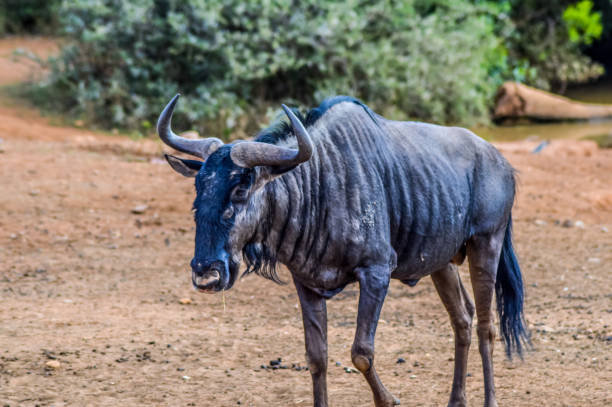
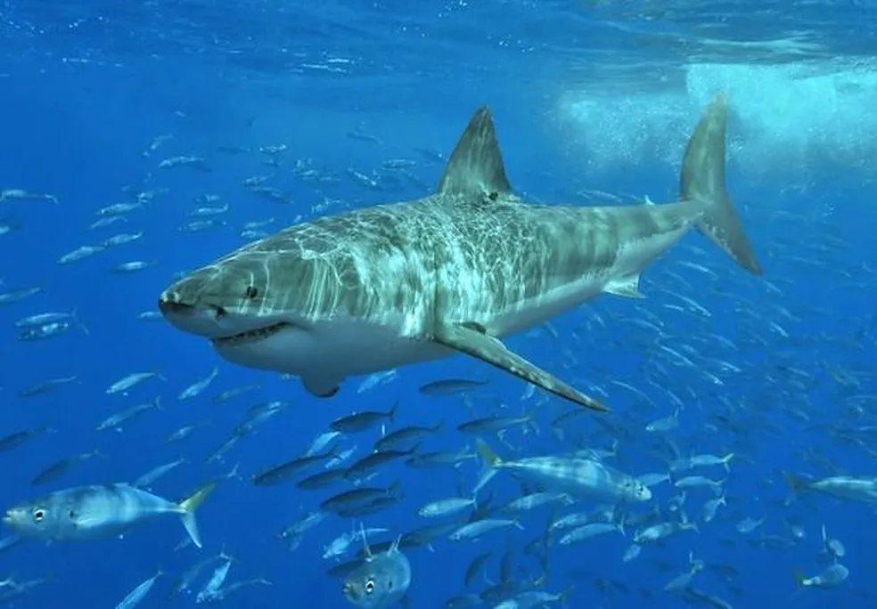
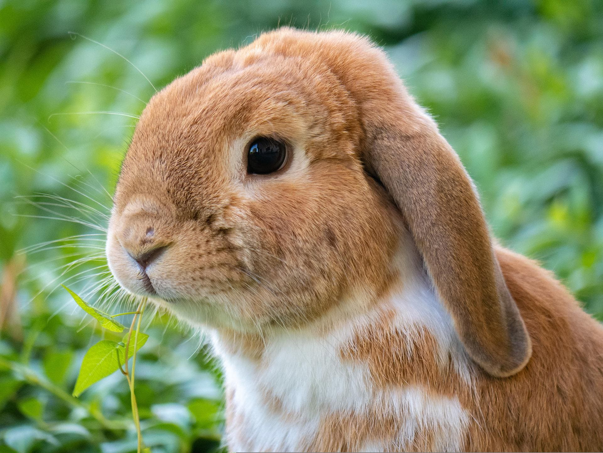
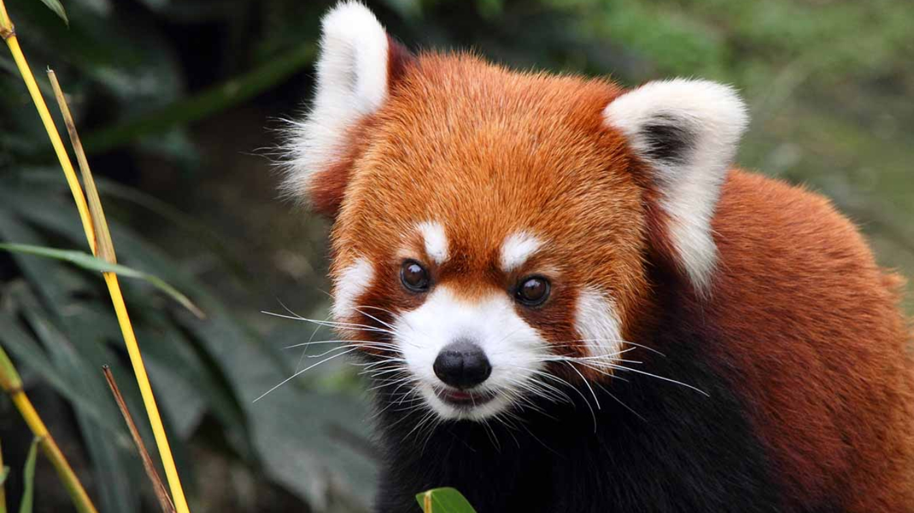
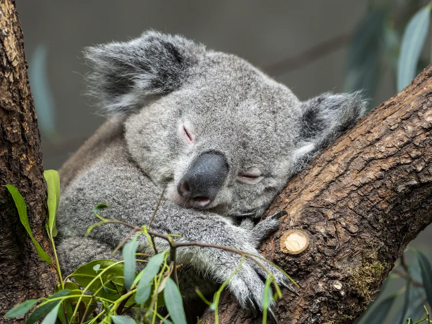
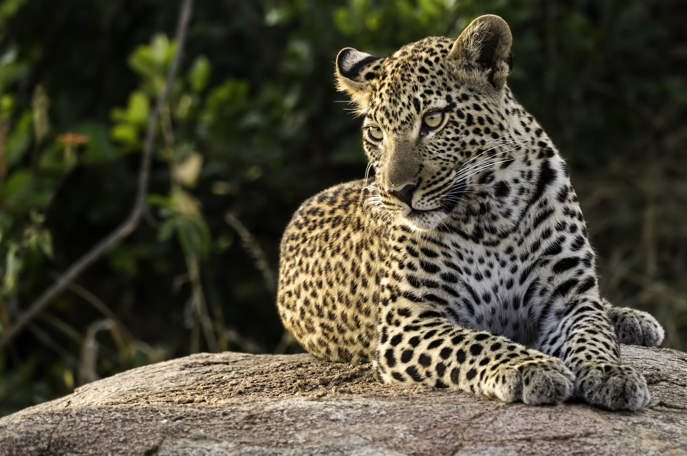
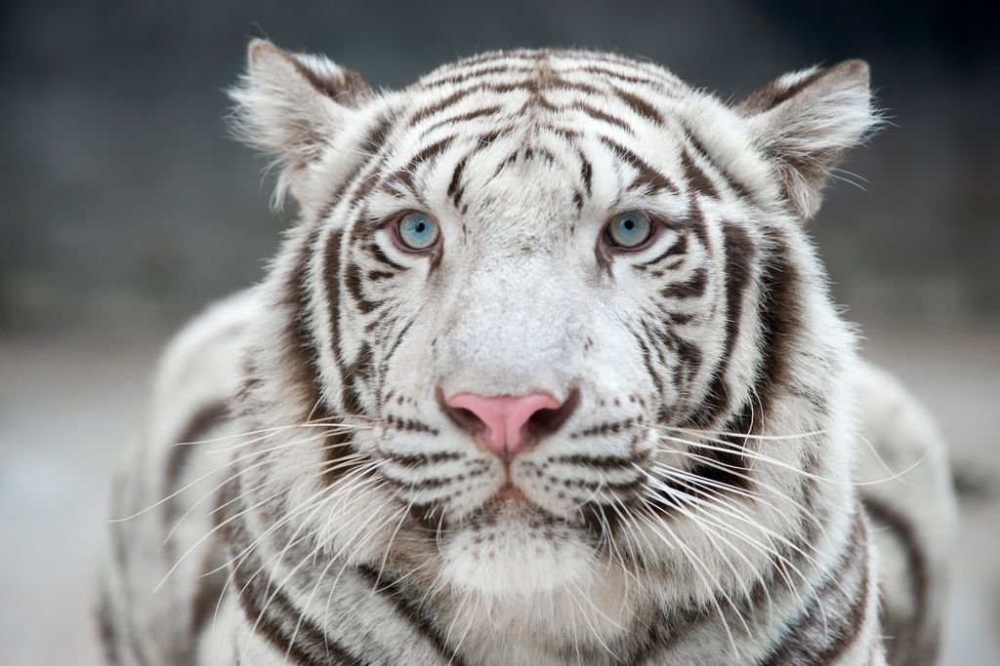
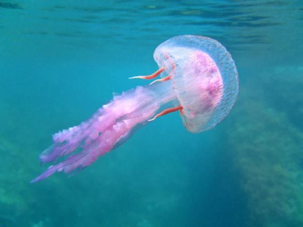

Top 10: Animais
Posições:
1º |
2º |
3º |
4º |
5º |
6º |
7º |
8º |
9º |
10º |
10ª Posição: Panda

Ursos panda adultos são conhecidos por serem bastante solitários, exceto durante a fase de procriação. As fêmeas, particularmente, gostam do seu espaço e normalmente são mais territorialistas. A maioria dos pandas protege e mantém um território de 3,21 quilômetros quadrados.
9ª Posição: Hiena

As hienas são animais carnívoros de médio a grande porte que ocupam lugares cimeiros na cadeia alimentar; a excepção é o lobo-da-terra que é insectívoro.
8ª Posição: Gnu

As hienas são animais carnívoros de médio a grande porte que ocupam lugares cimeiros na cadeia alimentar; a excepção é o lobo-da-terra que é insectívoro
7ª Posição: Tubarão

são animais que, geralmente, apresentam grande porte. Algumas espécies podem alcançar até 20 m de comprimento. Seu corpo é fusiforme, sua pele, áspera e resistente, é recoberta por escamas placoides, cujas formas e distribuição aumentam a eficiência da natação – fato que os auxilia na busca por suas presas.
6ª Posição: Coelho

um mamífero herbívoro que se destaca por suas longas orelhas e pernas traseiras. São capazes de correr rajadas curtas, e, para fugir de predadores, adotam a tática de se esconderem em tocas.
5ª Posição: Panda-vermelho

é nativo das regiões montanhosas do Himalaia e do sul da China, e está associado às florestas temperadas de altitude e a bambuzais.
4ª Posição: Coala

Os coalas apresentam entre 5 e 13 quilos e comprimento entre 60 e 85 centímetros. Assim como todos os mamíferos, possuem pelos, que são espessos, pequenos e densos.
3ª Posição: Leopardo

Está entre os mais belos animais selvagens. Mede até dois metros de comprimentos e pesa cerca de 90 kg. Apresenta pescoço longo, patas curtas e cauda longa.
2ª Posição: Trigre

é o maior felino do mundo e apresenta pescoço curto e grosso, ombros largos, grandes membros e longas garras. Esse animal possui caninos compridos, sendo o tigre-de-bengala portador dos maiores caninos de felinos do planeta.
1ª Posição: Aguaviva

Água-viva, medusa, alforreca ou mãe-d'água fazem referência a um conjunto de animais marinhos, que podem ser cnidários, ctenóforos e taliáceos.